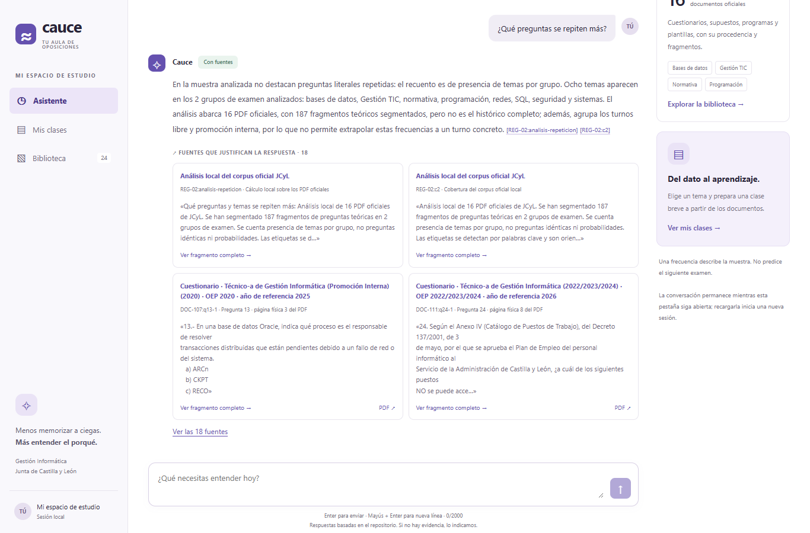
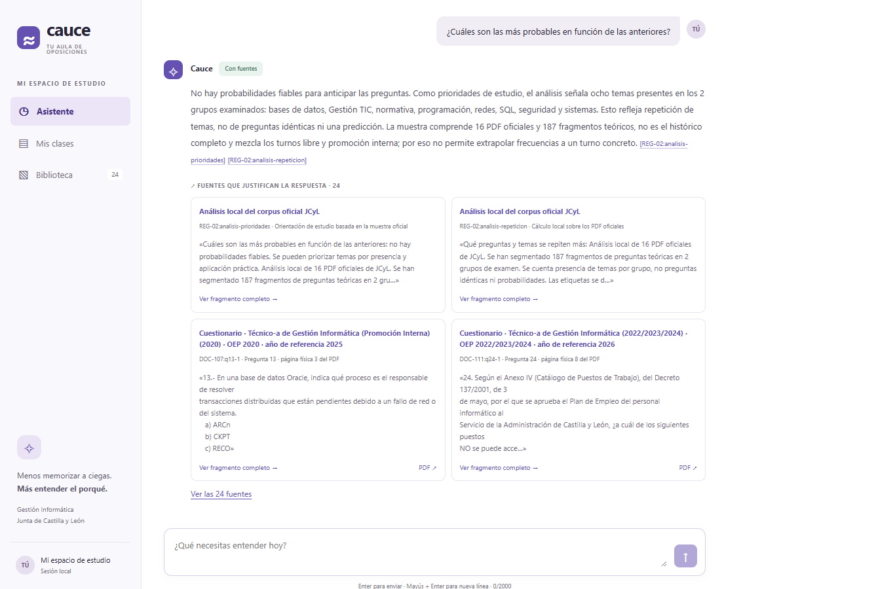
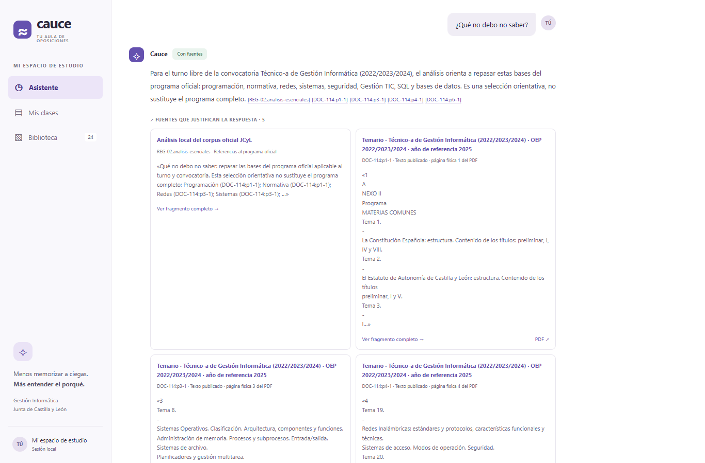
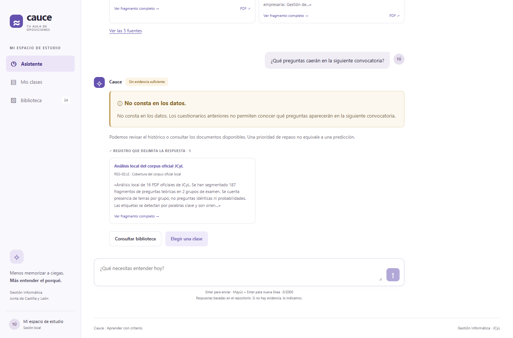
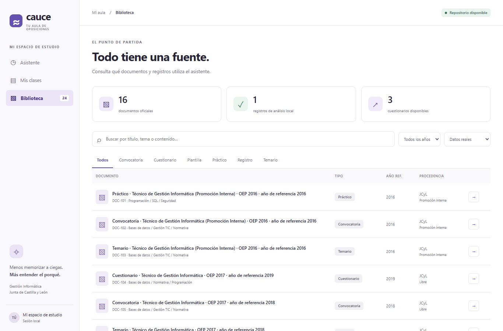

Clases TGI
Estudiar con evidencia.
Preparar la oposición de Técnico de Gestión Informática de la Junta de Castilla y León exige localizar y contrastar información repartida entre convocatorias, cuestionarios y supuestos prácticos. Clases TGI reúne ese material y permite consultar, repasar y preparar clases con fuentes visibles bajo cada respuesta.
De dónde salen los datos
16 PDF públicos descargados del portal de Empleo Público de JCyL, recorriendo cinco convocatorias: OEP 2016, 2017, 2020 y 2022/2023/2024, con turnos libre y promoción interna. Se conservan los originales, URL, fecha de consulta y huella SHA-256.
Los siete registros ficticios de la maqueta se mantienen separados y no se usan en las respuestas mostradas. La cobertura es parcial: un cuadernillo antiguo en Word queda pendiente de conversión.
Temas que se repiten
¿Qué preguntas se repiten más?

Vista de 1366 × 900 desplazada al intercambio actual. Abrir el intercambio completo en PNG. La respuesta se transcribe íntegra en «Cómo lo comprobé».

Prioridades con límites
¿Cuáles son las más probables en función de las anteriores?

Vista de 1366 × 900 desplazada al intercambio actual. Abrir el intercambio completo en PNG. La respuesta se transcribe íntegra en «Cómo lo comprobé».

Qué conviene dominar
¿Qué no debo no saber?

Vista de 1366 × 900 desplazada al intercambio actual. Abrir el intercambio completo en PNG. La respuesta se transcribe íntegra en «Cómo lo comprobé».

Una negativa fundamentada
¿Qué preguntas caerán en la siguiente convocatoria?

Vista de 1366 × 900 desplazada al intercambio actual. Abrir el intercambio completo en PNG. La respuesta se transcribe íntegra en «Cómo lo comprobé».

La biblioteca del proyecto
Documentos y registros disponibles

Cómo lo comprobé
Playwright abrió Microsoft Edge con una vista de 1366 × 900. Las cuatro preguntas se enviaron en una misma conversación: el historial contenía 0, 2, 4 y 6 mensajes respectivamente. Cada captura esperó una respuesta HTTP correcta, texto visible y al menos una tarjeta de fuente.
Se cotejaron todos los fragmentos devueltos con el catálogo: coincidencia literal y ninguna fuente ficticia. Ese control acredita la procedencia del texto; la comprobación de su significado se explica a continuación.
¿Qué preguntas se repiten más?
En la muestra analizada no destacan preguntas literales repetidas: el recuento es de presencia de temas por grupo. Ocho temas aparecen en los 2 grupos de examen analizados: bases de datos, Gestión TIC, normativa, programación, redes, SQL, seguridad y sistemas. El análisis abarca 16 PDF oficiales, con 187 fragmentos teóricos segmentados, pero no es el histórico completo; además, agrupa los turnos libre y promoción interna, por lo que no permite extrapolar estas frecuencias a un turno concreto. [REG-02:analisis-repeticion] [REG-02:c2]
Qué puedes abrir para confirmarlo
- El registro local enlazado arriba y datos.py, función
agregar_analisis_oficial, para revisar el cálculo y sus exclusiones. - Como contraste concreto de SQL: DOC-107:q15-1 (Pregunta 15 · página física 3 del PDF), sobre bases de datos de SQL Server, y DOC-111:q80-1 (Pregunta 80 · página física 20 del PDF), sobre comandos DML. También están en DOC-107.pdf · página física 3 y DOC-111.pdf · página física 20.
Las etiquetas se obtienen por palabras clave. La coincidencia temática no acredita repetición literal de preguntas ni sustituye una clasificación manual del cuestionario completo.
Priorizar sin predecir
¿Cuáles son las más probables en función de las anteriores?
No hay probabilidades fiables para anticipar las preguntas. Como prioridades de estudio, el análisis señala ocho temas presentes en los 2 grupos examinados: bases de datos, Gestión TIC, normativa, programación, redes, SQL, seguridad y sistemas. Esto refleja repetición de temas, no de preguntas idénticas ni una predicción. La muestra comprende 16 PDF oficiales y 187 fragmentos teóricos, no es el histórico completo y mezcla los turnos libre y promoción interna; por eso no permite extrapolar frecuencias a un turno concreto. [REG-02:analisis-prioridades] [REG-02:analisis-repeticion]
Qué puedes abrir para confirmarlo
- El registro de prioridades enlazado arriba: contiene las referencias documentales del recuento y ejemplos de aplicación práctica.
- DOC-107.pdf · página física 3 y DOC-111.pdf · página física 20 permiten comprobar ejemplos de SQL en las dos convocatorias. Estos ejemplos justifican presencia del tema; por sí solos no validan todas las etiquetas.
- datos/jcyl/documentos.json conserva la segmentación y los temas asignados. capturas/resultados.json conserva la respuesta y las 24 fuentes recibidas en esta ejecución.
Lo esencial, con programa
¿Qué no debo no saber?
Para el turno libre de la convocatoria Técnico-a de Gestión Informática (2022/2023/2024), el análisis orienta a repasar estas bases del programa oficial: programación, normativa, redes, sistemas, seguridad, Gestión TIC, SQL y bases de datos. Es una selección orientativa, no sustituye el programa completo. [REG-02:analisis-esenciales] [DOC-114:p1-1] [DOC-114:p3-1] [DOC-114:p4-1] [DOC-114:p6-1]
Abre estas páginas del programa DOC-114
| Afirmación de la respuesta | Fuente que debes contrastar |
|---|---|
| Sistemas, servidores y virtualización | DOC-114:p3-1 (Texto publicado · página física 3 del PDF). Temas 8–16: sistemas operativos, servidores, almacenamiento y virtualización. |
| Redes e ingeniería de sistemas | DOC-114:p4-1 (Texto publicado · página física 4 del PDF). Temas 19–30: redes, comunicaciones, nube y desarrollo. |
| Bases de datos, SQL y seguridad | DOC-114:p6-1 (Texto publicado · página física 6 del PDF). Temas 44–50: datos relacionales y NoSQL, SQL, ENS, protección de datos y cifrado. |
Los enlaces anteriores abren la publicación oficial en la página física citada. Copia local: DOC-114.pdf · página física 3, DOC-114.pdf · página física 4 y DOC-114.pdf · página física 6. Consulta también la portada del programa: DOC-114:p1-1 (Texto publicado · página física 1 del PDF).
En esta ejecución la respuesta especifica turno libre y OEP 2022/2023/2024. La mención de Gestión TIC procede del análisis local y se señala expresamente que los fragmentos citados no detallan aquí su contenido.
Reconocer los límites
¿Qué preguntas caerán en la siguiente convocatoria?
No consta en los datos. Los cuestionarios anteriores no permiten conocer qué preguntas aparecerán en la siguiente convocatoria.
Comprobación técnica: la API devolvió no_consta=true y modelo_utilizado=false. La ruta de rechazo previo, revisada en rag.py, detecta la petición de predicción antes de buscar embeddings o llamar al modelo generativo.
La biblioteca también se contrastó
La API devolvió 24 registros: 16 publicaciones oficiales, un registro calculado sobre ellas y siete ejemplos ficticios. El filtro inicial «Datos reales» muestra 17; el contador lateral corresponde al catálogo completo.
Para verificarlo, abre el catálogo oficial de la API, el informe de importación y el JSON documental. Las URL y los SHA-256 permiten cotejar los PDF guardados en datos/jcyl/originales/.
Qué quedó registrado
- Cinco capturas principales y cuatro intercambios completos, sin respuestas simuladas.
- Resultados, historial enviado y fuentes exactas en capturas/resultados.json.
- Lectura visual de los cinco PNG: todos muestran datos reales y tarjetas de evidencia.
Los enlaces al registro interno y a la API requieren que la aplicación local esté arrancada. Las copias de PDF se incluyen en el proyecto; los enlaces oficiales requieren conexión a Internet.
Cómo está hecho
Servidor y modelos
FastAPI se ejecuta con uv run servidor.py en el puerto 8000. El RAG usa NumPy para buscar por similitud coseno sobre embeddings normalizados; guarda el índice en rag/indice.npz y lo reutiliza mientras no cambien los documentos o el modelo de embeddings.
| Función | Configuración comprobada |
|---|---|
| Modelo de respuestas | gpt-6-luna, mediante OpenAI, con salida estructurada. |
| Modelo de embeddings | text-embedding-3-small. |
| Recuperación | Umbral de similitud 0,35; hasta ocho resultados iniciales y fuentes enlazadas por el análisis. |
| Contrato | POST /api/preguntar: pregunta e historial → respuesta, fuentes, no_consta y modelo_utilizado. GET /api/documentos: catálogo. |
Sin resultados suficientemente similares, se devuelve «No consta» sin llamar al modelo generativo. Las peticiones que exigen predecir un examen futuro se rechazan antes de la búsqueda. Las citas se validan contra los fragmentos recuperados.
Interfaz y clave
Svelte con TypeScript y Vite presenta las vistas de la maqueta. El navegador consulta exclusivamente /api; Vite lo reenvía a Python. La clave se carga desde .env en el servidor y no llega al navegador.
Ponerlo en marcha
Cómo arrancarlo
Abre http://127.0.0.1:5173/. En Windows se usa npm.cmd para evitar restricciones de ejecución de scripts de PowerShell.
Cómo regenerar este entregable
Playwright Core utiliza channel: "msedge", sin descargar navegadores. El segundo script carga el HTML local con sus imágenes relativas y genera el PDF A4 mediante page.pdf. Se conserva una captura por figura sin dividirla entre páginas.